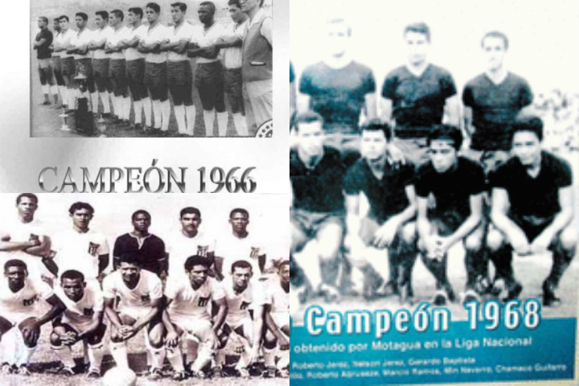

Liga Nacional Hondureña
La liga nacional hondureña, también conocida como Liga Betcris por el nombre de su patrocinador, es el torneo de fútbol profesional más importante de Honduras. Esta liga se fundó el 10 de mayo de 1964 y su primer torneo se llevó a cabo en 1965, con la participación de 10 clubes. Actualmente, la liga cuenta con 10 equipos que compiten en dos torneos por temporada: el Apertura y el Clausura.

Liga Nacional 1965
En el año 1965, el primer torneo de la Liga Nacional Hondureña fue inaugurado con la participación de 10 equipos. Este torneo marcó el inicio de una rica historia en el fútbol hondureño.


Diseño web - JahirCorrales